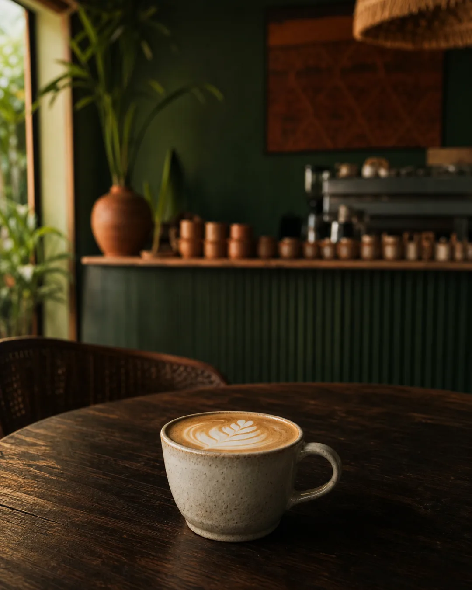
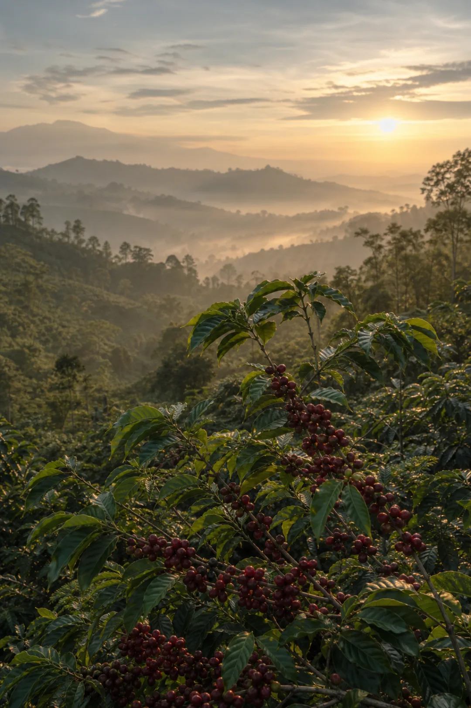
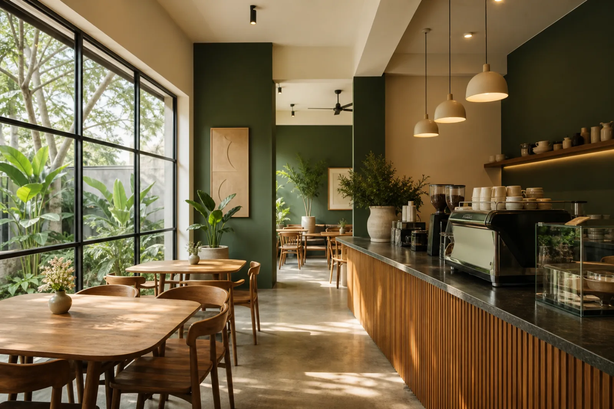
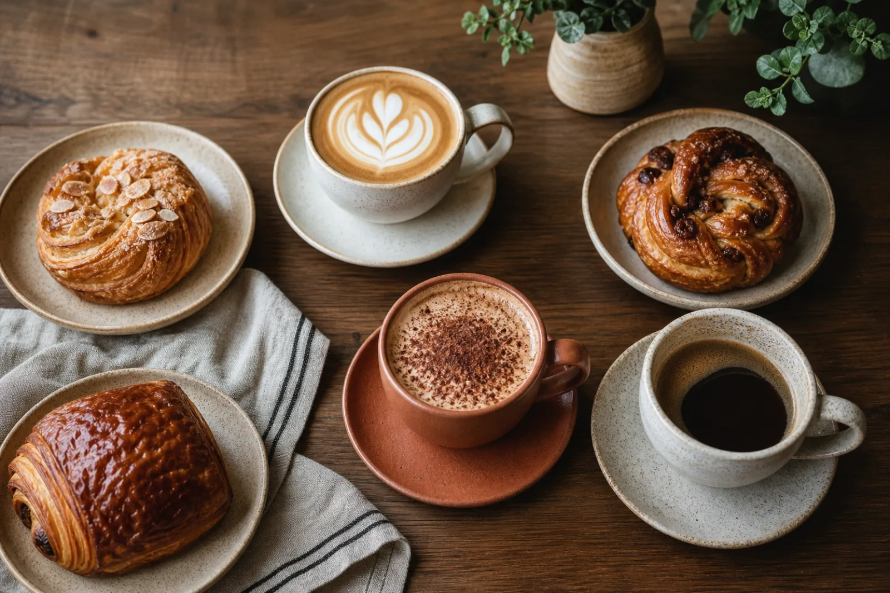

Roasted locally · brewed daily
Tempat kopi dan cerita bertemu.
Dari biji pilihan petani Nusantara hingga pastry hangat dari dapur kami—setiap sajian dibuat untuk menemani jeda terbaikmu.
4.9/5rating pelanggan
100%biji lokal
07–22buka setiap hari

“Hangatnya singgah, nikmatnya tinggal.”
Single origin NusantaraRoast segar mingguanPastry buatan sendiriRuang ramah kerjaSingle origin Nusantara

Dari kebunke cangkirmu
Cerita kami
Kopi baik dimulai dari hubungan yang baik.
Kami bekerja langsung dengan petani dan roaster lokal untuk menghadirkan biji kopi Indonesia yang dapat ditelusuri asalnya. Setiap origin dipanggang dalam batch kecil agar karakternya tetap hidup.
Di kedai, barista kami menyeduhnya dengan teliti—tanpa terburu-buru, tanpa dibuat rumit.
Etis & berkelanjutanKemitraan langsung dengan petani
Dipanggang segarBatch kecil setiap minggu
Asli IndonesiaGayo, Kintamani, hingga Flores
Minim limbahKemasan dan operasional lebih sadar
Ruang untukmu
Datang untuk kopi, tinggal karena suasana.
Sudut tenang untuk fokus, meja panjang untuk berbagi, dan cahaya hangat untuk berbincang sampai lupa waktu.

Morning light
Freshly bakedDaily brew
Good conversations
★★★★★
“Kopinya serius, suasananya santai. Salah satu tempat favorit untuk kerja pagi di Jakarta.”
Mampir ke Senja
Kami siapkan tempat untukmu.
Alamat
Jl. Kemang Raya No. 18
Jakarta Selatan
Jam buka
Senin–Jumat 07.00–22.00
Sabtu–Minggu 08.00–23.00
Kontak
+62 813 1770 613
hello@senjacoffee.id
Fasilitas
Wi-Fi · Stop kontak
Musala · Pet friendly area